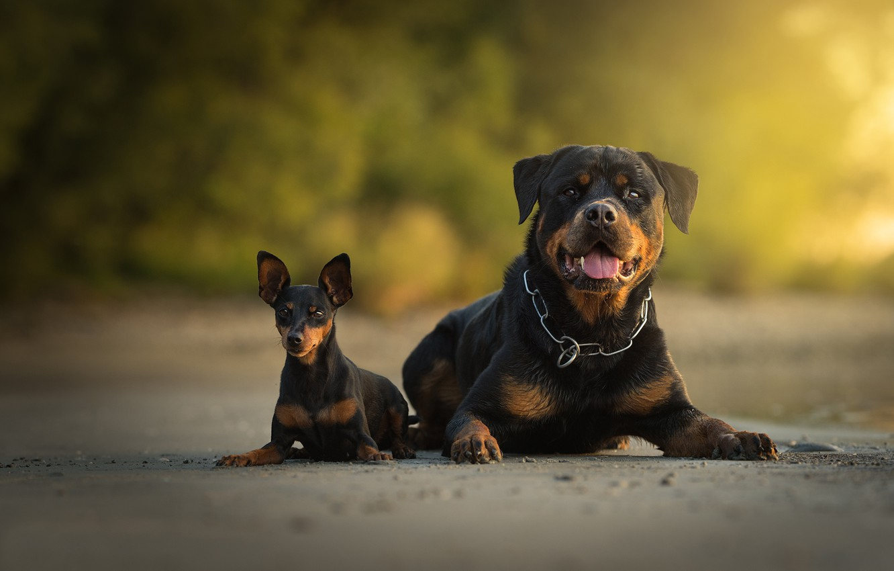

A empresa
Conheça as características de cachorrinhos que vão lhe cativar e escolha o pet ideal para fazer parte da sua família
Vantagens de ter um cachorrinho
O que os donos estão dizendo?
"Muitos confudem o American Staffordshire Terrier com o Pit Bull, mas são cães diferentes, com temperamentos diferentes."
Fonte: Site "Tudo sobre cachorros"
Raças
- Pinscher
- Rottweiler
- Vira-lata
